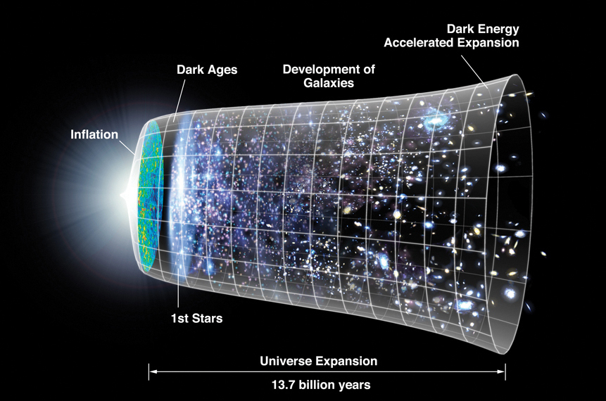
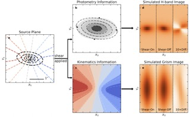
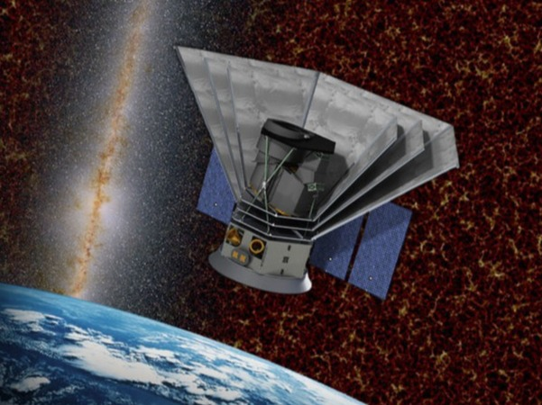
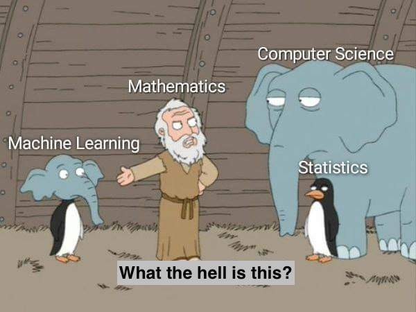
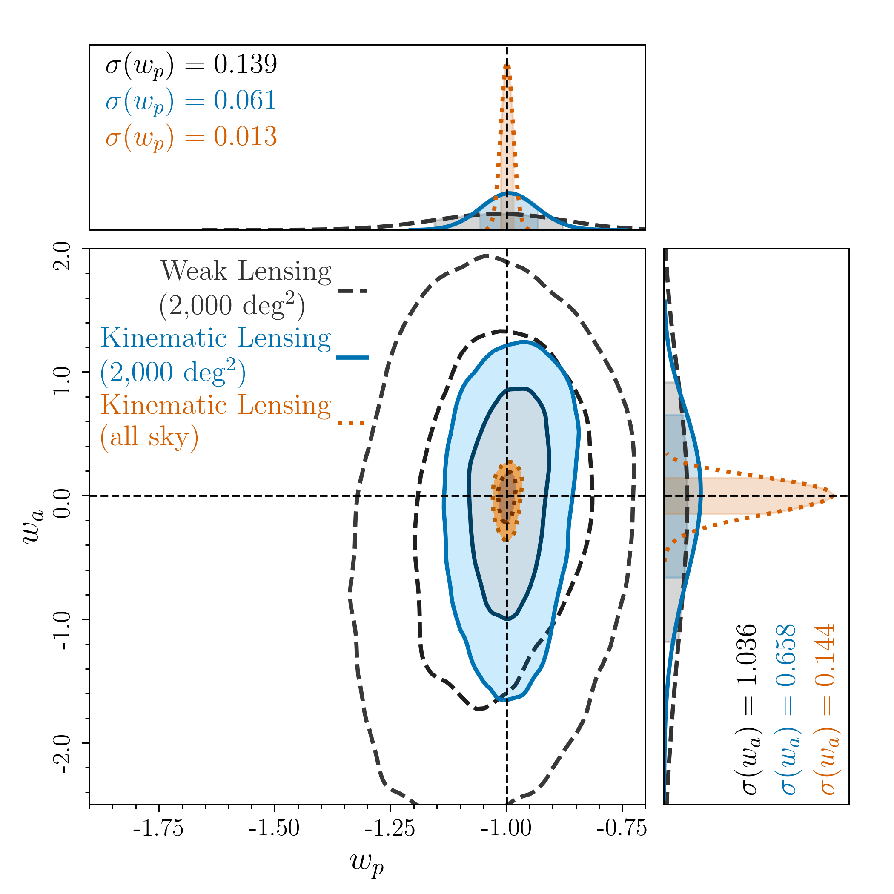
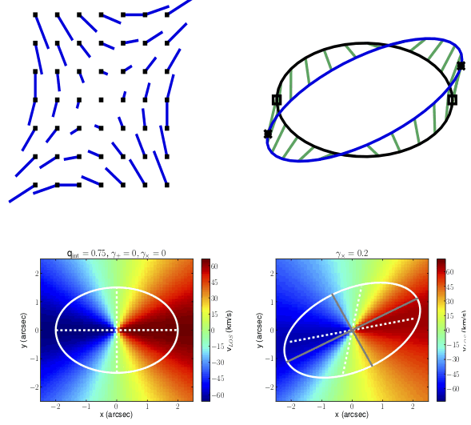
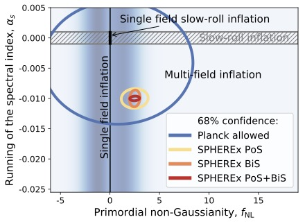

Created with
HTML Website Generator
We combine different cosmological probes and datasets to explore fundamental physics in the Universe.

KL combines imaging and spectroscopic data into a new type of shear inference. It is a promising avenue for cosmological measurements.

The NASA SPHEREx satellite mission will constrain the physics of inflation, a rapid expansion of space, in the early Universe.

We use ML to accelerate complex calculations of cosmological models and to learn features in large datasets.
Our lab is interested in exploring fundamental physics questions about our Universe, dark energy, dark matter, gravity, neutrino mass, and inflation:
1) What is the underlying physical mechanism driving the accelerated expansion of the Universe?
2) What is the mass and number of neutrino species?
3) What is the nature of dark matter and the connection of dark matter overdensities and galaxy formation?
4) Is General Relativity a complete description of our theory of gravity or does it need to be modified as a function of the environment or the distances involved?
5) Can we measure the physics of inflation, i.e. of the very first second when the Universe began?
We explore these questions through a combination of theoretical modeling and statistical data analysis.
The main noise contribution in traditional weak lensing (WL) measurements originates from the large dispersion of the intrinsic ellipticity distribution of galaxies. This so-called shape noise dilutes the desired measurement of the shear effect, which is a factor of 10-50 lower. As a consequence, traditional WL methods require a large ensemble of galaxies to measure the shear effect, which leads to the inclusion of a substantial fraction of faint, small galaxies in these ensembles. Unsurprisingly, faint galaxies are strongly affected by uncertainties in shape and redshift measurement algorithms, which are hard to control at the level of the Roman Space Telescope and Rubin Observatory's LSST.
KL combines imaging and spectroscopic information from galaxies to reduce shape noise by more than an order of magnitude and either removes or strongly mitigates the most important sources of theoretical and observational systematic errors inherent in traditional weak lensing techniques (most prominently, intrinsic alignment, shear and photo-z calibration).

In Xu et al 2022 we explore the KL concept in the context of the Roman Space Telescope and find that it would significantly boost the cosmological information compared to the Roman traditional WL measurement. We note that KL and WL are complementary since the underlying galaxy samples are fundamentally different.
The figure to the right shows the improvement of KL (blue contours) with Roman ST over WL with Roman ST (black solid). We also explore the idea of an all-sky KL survey, which would cover significantly more area compared to the current Roman reference design survey (2000 deg^2). We note that the survey design of Roman is actively developed and will be finalized only shortly before launch.

The basic idea for the kinematic lensing is depicted on the right. In an image, an inclined rotating circular disk has elliptical isophotes. When the image of this galaxy is sheared, the isophotes remain elliptical (in the weak shear limit, |g| << 1) with a new axis ratio and position angle. New photometric axes are inferred from this ellipse in the sheared image, and information about the original axes is lost. The case is different however, with galaxy kinematics measured via spectroscopy. The unsheared circular disk has kinematic axes that are perpendicular to one another and are aligned with the unsheared photometric axes. This cross shape becomes skewed when the velocity map is sheared; the kinematic axes are no longer perpendicular and they are misaligned with the photometric axes inferred from the sheared isophotal ellipse in the imaging data.
The fact that the velocity map transforms differently than the photometric image when shear is applied can be used to combine imaging and spectroscopic information to tightly constrain the intrinsic ellipticity of the source galaxies, thereby removing the largest statistical uncertainty in cosmic shear.

SPHEREx (Spectro-Photometer for the History of the Universe, Epoch of Reionization, and Ices Explorer) is a selected NASA explorer mission that will observe the entire sky with near-spectroscopic resolution. By measuring a unique signal in the clustering of galaxies on large scales, SPHEREx will be able to constrain whether the initial density field that seeds our Universe has signatures of non-Gaussianity. These signatures allow us to constrain different physics scenarios of "inflation" (see Fig to the right), a rapid expansion phase in the early Universe.
The mission is led by Caltech/JPL (SPHEREx mission website), our group is building the modeling and inference code for the galaxy power spectrum analysis. We are also working on quantifying synergies of SPHEREx and other cosmological missions (in particular LSST) with the goal to constrain Dark Energy.
The challenge of balancing accuracy and speed in modeling multi-probe data vectors has been a limiting factor already for the current generation of cosmological surveys. This problem will increase significantly given the decrease in statistical uncertainty for future datasets and the corresponding increase in model complexity.
Emulating the results of expensive numerical simulations and subsequent complex calculations that underpin the computation of observables as a function of the parameter space has been identified as the most promising path forward. We are developing neural network architectures that are precise, fast, and computationally inexpensive in performing these computations and that will enable the complex analyses using Roman, Rubin, SPHEREx, and DESI data.
Created with
HTML Website Generator